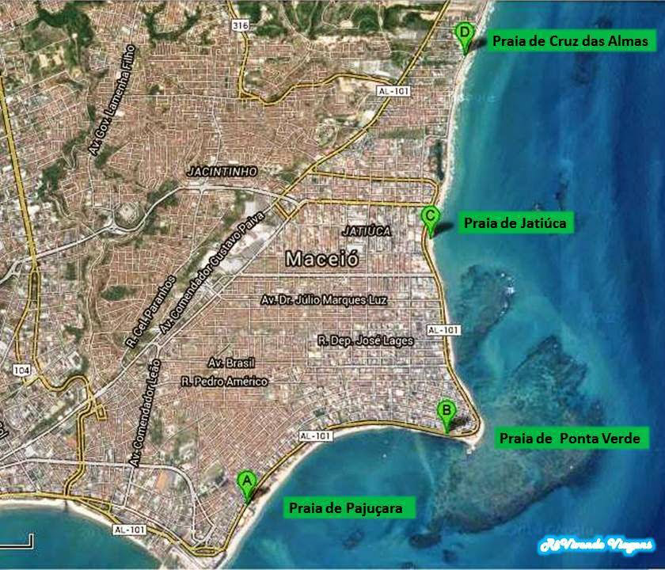
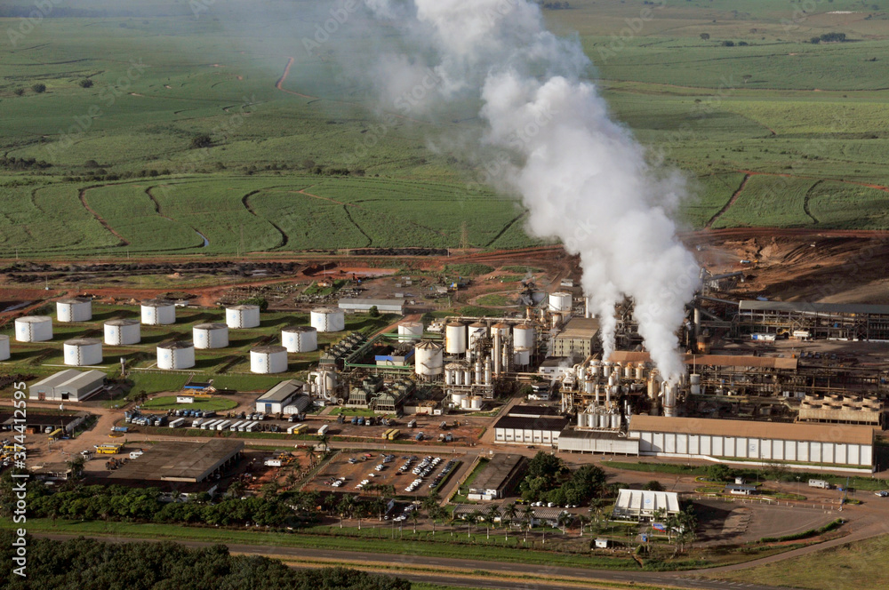
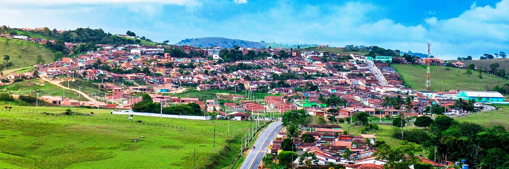
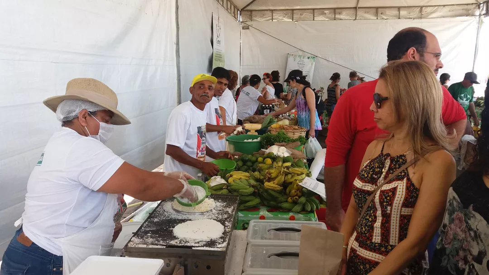
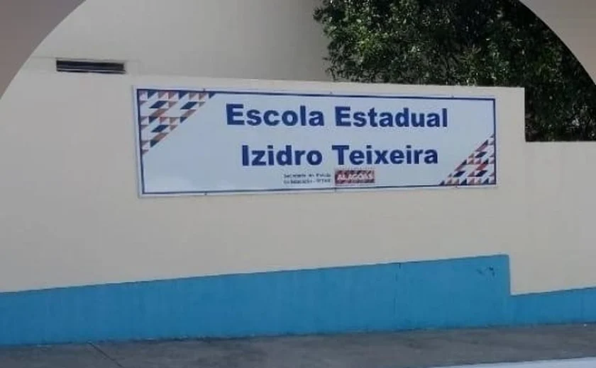
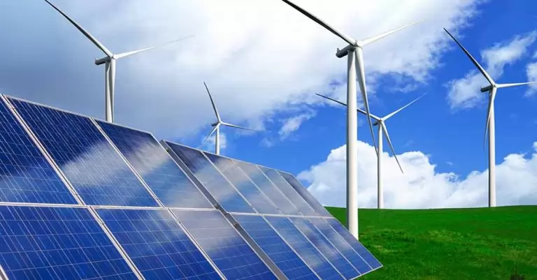

🎼 Missão 1: O Mar de Maceió

Contexto Alagoano: Maceió é famosa por suas praias e pelo Sal-Gema extraído do subsolo. A música "Minha Alagoas" de Eliezer Setton celebra o mar, que é uma mistura homogênea. O Sal-Gema (NaCl) é usado na indústria para fabricar PVC, um polímero essencial para a economia local.
"O mar que banha Alagoas..." - Eliezer Setton
Desafio: O Sal-Gema (NaCl) é um composto Orgânico ou Inorgânico?
🚜 Missão 2: As Usinas (Pilar)

Contexto Alagoano: No caminho entre Maceió e Chã Preta, as usinas de cana-de-açúcar transformam o açúcar em etanol por fermentação. Esse processo é fundamental para a economia do interior de Alagoas e mostra a Química presente no cotidiano.
O açúcar da cana vira álcool (Etanol) nas usinas.
Desafio: A fermentação é um fenômeno Físico ou Químico?
🏡 Missão 3: Chã Preta (Eco-Cooling)

Contexto Alagoano: A Escola Izidro Teixeira sofre com o calor intenso. O projeto Eco-Cooling usa tinta branca ecológica para aumentar o albedo das salas, refletindo a radiação solar e melhorando o conforto térmico dos alunos.
Hackeando o calor na Escola Izidro Teixeira.
Desafio: Nome do fenômeno de refletir o calor? (Dica: A_____o)
🚢 Missão 4: Açúcar e Porto de Jaraguá

Contexto Alagoano: O Porto de Jaraguá, em Maceió, é um dos principais pontos de exportação de açúcar do Brasil. A música regional celebra a importância do açúcar para a economia e cultura de Alagoas.
"O açúcar que vai para o mundo..."
Desafio: O açúcar é um carboidrato. Qual é a fórmula molecular da sacarose?
⛰️ Missão 5: Serra Lisa (Chã Preta)

Contexto Alagoano: A Serra Lisa é um dos pontos mais altos de Alagoas, localizada em Chã Preta. O solo da região é rico em minerais, e a erosão é um fenômeno natural importante para a formação do relevo.
Desafio: Qual é o principal processo químico responsável pela erosão das rochas na Serra Lisa? (Dica: envolve água e ácidos naturais)
🌱 Missão 6: Agricultura em Chã Preta

Contexto: Chã Preta é conhecida pela produção agrícola, especialmente de feijão e milho. O solo fértil depende do ciclo do nitrogênio para manter sua produtividade.
Desafio: Qual elemento químico é fundamental para o crescimento das plantas e é fixado no solo por bactérias presentes nas raízes do feijão?
💧 Missão 7: Água e Saúde em Chã Preta
Contexto: O abastecimento de água potável é um desafio em muitas cidades do interior. O tratamento da água envolve processos químicos para remover impurezas e garantir a saúde da população.
Desafio: Cite um processo químico utilizado no tratamento da água para torná-la potável.
🔥 Missão 8: Energia e Gás de Cozinha

Contexto: O gás de cozinha (GLP) é essencial para o preparo dos alimentos em Chã Preta e em todo o Brasil. O GLP é uma mistura de hidrocarbonetos, principalmente propano e butano.
Desafio: Qual é a fórmula molecular do gás propano, um dos principais componentes do GLP?
🏫 Missão 9: Escola Estadual Izidro Teixeira

Contexto: A Escola Estadual Izidro Teixeira é referência em projetos de sustentabilidade e ciência em Chã Preta. Os alunos já participaram de projetos de reciclagem e reaproveitamento de materiais.
Desafio: Cite um material reciclável que pode ser reaproveitado em projetos escolares e explique brevemente seu benefício ambiental.
⚡ Missão 10: Química do Futuro – Energia Limpa em Alagoas

Contexto: Alagoas pode ser referência em energia limpa! Projetos de energia solar, eólica e hidrogênio verde já estão mudando o estado. A Química é fundamental para transformar luz do sol, vento e água em energia sustentável.
Desafio: Qual fonte de energia limpa você acha que tem mais potencial para Alagoas? Escreva sua opinião e explique como a Química pode ajudar nesse processo!